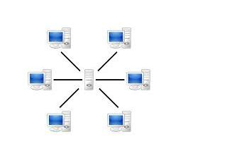

HISTORY OF THE
Internet

HISTORY OF THE
Internet
It is an interesting story how the internet started and evolved. Actually, the initial reason for inventing the internet is not really for research-sharing already, but for defense during war. On this page, highlights of some of the most important years in history of the internet will be summarized and discussed.
Batch Processing is quite ineffective since data processing and transfering happens one at a time in a computer. During that time, large computers were used that is why there was a need for large cooled rooms.
It was then that Batch Processing is perceived as inefficient that Time-Sharing came into the scene. It is where 1 computer is used by multiple users
On October 4, 1957 (during Cold War - America vs Soviet Union), happened the launch of first human-made Earth satellite, Sputnik-1 by the Soviet Union. This satellite could cause atomic conflicts and crash of nodes on Centralized Network Architecture, which will be discussed on the following texts.
As a defense, America founded DARPA (Defense Advanced Research Project Agency) in February 1958 to establish faster connections, information and knowledge transfer from the people. Until today, DARPA aims to provide national security for USA through new technologies and beyond great solutions that could help the U.S. military.
The birth of DARPA lead to the development of ARPANET. During this time, ARAPANET is not yet fully created. It was just being started. Its purpose is to avoid doubling of researches of scientists since there is a larger network for computers.
Future developments on ARPANET may be found on The First Internet page.
US discovered that Cuba sent missiles to their country to destroy servers which is the America's key to connect. The structure of these nodes connected to a server is the Centralized Network Architecture. 
When the missiles hit the server, there will be a lost of connection for all computers connected to it. With this breakdown attack, developed the Decentralized Network Architecture where if some nodes are lost, operation or the connection still continues. It just goes to another route or path to reach the other nodes.
Since communication works through radiowaves, and that atomic attacks could cause problems on the connection, and there is a need for longer waves, Distributive Method was developed which started from short Direct Waves.
Want To Make Your Own
QR Code?

Stay Connected With
The Author


© Copyright 2015 All Rights Reserved. CMSC 2